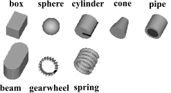
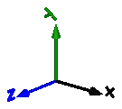
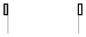
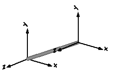
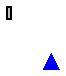

Package Visualizers contains components to visualize 3-dimensional shapes. These components are the basis for the animation features of the MultiBody library.
| FixedShape FixedShape2 |
Animation shape of a part with fixed sizes. FixedShape2 has additionally
a frame_b for easier connection to further visual objects.
The following shape types are supported:  |
| FixedFrame | Visualizing a coordinate system including axes labels with fixed sizes:  |
| FixedArrow, SignalArrow |
Visualizing an arrow. Model "FixedArrow" provides
a fixed sized arrow, model "SignalArrow" provides
an arrow with dynamically varying length that is defined
by an input signal vector: |
| Advanced | Package that contains components to visualize 3-dimensional shapes where all parts of the shape can vary dynamically. Basic knowledge of Modelica is needed in order to utilize the components of this package. |
The colors of the visualization components are declared with the predefined type MultiBody.Types.Color. This is a vector with 3 elements, {r, g, b}, and specifies the color of the shape. {r,g,b} are the "red", "green" and "blue" color parts. Note, r g, b are given as Integer[3] in the ranges 0 .. 255, respectively.
| Name | Description |
|---|---|
| FixedShape | Fixed animation shape of a part |
| FixedShape2 | Fixed animation shape of a part and fixed translation of frame_b with respect to frame_a |
| FixedFrame | Visualizing a coordinate system including axes labels |
| FixedArrow | Visualizing an arrow with constant size in frame_a |
| SignalArrow | Visualizing an arrow with dynamic size in frame_a based on input signal |
| Advanced | Visualizers that require basic knowledge about Modelica in order to use them |
| Internal | Visualizers that will be replaced by improved versions in the future (don't use them) |

Model FixedShape defines a visual shape that is
shown at the location of its frame_a.
The following shapes are currently supported via
parameter shapeType (e.g., shapeType="box"):

The dark blue arrows in the figure above are directed along
parameter lengthDirection. The light blue arrows are directed
along parameter widthDirection. The coordinate systems
in the figure represent frame_a of the FixedShape component.
Additionally external shapes are specified as DXF-files (only 3DFace is supported). External shapes must be named "1", "2" etc.. The corresponding definitions should be in files "1.dxf", "2.dxf" etc.Since the DXF-files contain color and dimensions for the individual faces, the corresponding information in the model is currently ignored. The DXF-files must be found in the current directory.
The sizes of any of the above components are specified by the length, width and height parameters. Via parameter extra additional data can be defined:
| shapeType | Meaning of parameter extra |
|---|---|
| "cylinder" | if extra > 0, a black line is included in the cylinder to show the rotation of it. |
| "cone" | extra = diameter-left-side / diameter-right-side, i.e., extra = 1: cylinder extra = 0: "real" cone. |
| "pipe" | extra = outer-diameter / inner-diameter, i.e, extra = 1: cylinder that is completely hollow extra = 0: cylinder without a hole. |
| "gearwheel" | extra is the number of teeth of the gear. |
| "spring" | extra is the number of windings of the spring. Additionally, "height" is not the "height" but 2*coil-width. |
Parameter color is a vector with 3 elements, {r, g, b}, and specifies the color of the shape. {r,g,b} are the "red", "green" and "blue" color parts. Note, r g, b are given as Integer[3] in the ranges 0 .. 255, respectively. The predefined type MultiBody.Types.Color contains a temporary menu definition of the colors used in the MultiBody library (this will be replaced by a color editor).
| Name | Default | Description |
|---|---|---|
| animation | true | = true, if animation shall be enabled |
| if animation = true | ||
| shapeType | "box" | Type of shape |
| r_shape[3] | {0,0,0} | Vector from frame_a to shape origin, resolved in frame_a. [m] |
| lengthDirection | {1,0,0} | Vector in length direction of shape, resolved in frame_a |
| widthDirection | {0,1,0} | Vector in width direction of shape, resolved in frame_a |
| length | 1 | Length of shape [m] |
| width | 0.1 | Width of shape [m] |
| height | 0.1 | Height of shape [m] |
| color | {0,128,255} | Color of shape. |
| extra | 0.0 | Additional parameter for cylinder, cone, pipe, gearwheel and spring (see docu) |
model FixedShape "Fixed animation shape of a part"
import SI = Modelica.SIunits;
extends MultiBody.Interfaces.PartialVisualizer;
parameter Boolean animation=true "= true, if animation shall be enabled";
parameter MultiBody.Types.ShapeType shapeType = "box"
"|if animation = true| Type of shape";
parameter SI.Position r_shape[ 3]={0,0,0}
"|if animation = true| Vector from frame_a to shape origin, resolved in frame_a.";
parameter MultiBody.Types.Axis lengthDirection = {1,0,0}
"|if animation = true| Vector in length direction of shape, resolved in frame_a";
parameter MultiBody.Types.Axis widthDirection = {0,1,0}
"|if animation = true| Vector in width direction of shape, resolved in frame_a";
parameter SI.Distance length = 1 "|if animation = true| Length of shape";
parameter SI.Distance width = 0.1 "|if animation = true| Width of shape";
parameter SI.Distance height = 0.1 "|if animation = true| Height of shape";
parameter MultiBody.Types.Color color = {0,128,255}
"|if animation = true| Color of shape.";
parameter Real extra=0.0
"|if animation = true| Additional parameter for cylinder, cone, pipe, gearwheel and spring (see docu)";
protected
parameter Integer ndim=if world.enableAnimation and animation then 1 else 0;
Visualizers.Advanced.Shape vis[
ndim](
each r_shape=r_shape,
each length=length,
each width=width,
each height=height,
each lengthDirection=lengthDirection,
each widthDirection=widthDirection,
each shapeType=shapeType,
each color=color,
each extra=extra,
each r=frame_a.r_0,
each R=frame_a.R);
equation
// No forces and torques
frame_a.f = zeros(3);
frame_a.t = zeros(3);
end FixedShape;

Model FixedShape2 defines a visual shape that is
shown at the location of its frame_a. This model is identical
to FixedShape with the only difference that an
additional frame_b is present which is parallel to frame_a.
This makes it more convenient to connect several visual
shapes together when building up more complex visual
objects. The following shapes are currently supported via
parameter shapeType (e.g., shapeType="box"):
The dark blue arrows in the figure above are directed along
parameter lengthDirection. The light blue arrows are directed
along parameter widthDirection. The coordinate systems
in the figure represent frame_a of the FixedShape component.
Additionally external shapes are specified as DXF-files (only 3DFace is supported). External shapes must be named "1", "2" etc.. The corresponding definitions should be in files "1.dxf", "2.dxf" etc.Since the DXF-files contain color and dimensions for the individual faces, the corresponding information in the model is currently ignored. The DXF-files must be found in the current directory.
The sizes of any of the above components are specified by the length, width and height parameters. Via parameter extra additional data can be defined:
| shapeType | Meaning of parameter extra |
|---|---|
| "cylinder" | if extra > 0, a black line is included in the cylinder to show the rotation of it. |
| "cone" | extra = diameter-left-side / diameter-right-side, i.e., extra = 1: cylinder extra = 0: "real" cone. |
| "pipe" | extra = outer-diameter / inner-diameter, i.e, extra = 1: cylinder that is completely hollow extra = 0: cylinder without a hole. |
| "gearwheel" | extra is the number of teeth of the gear. |
| "spring" | extra is the number of windings of the spring. Additionally, "height" is not the "height" but 2*coil-width. |
Parameter color is a vector with 3 elements, {r, g, b}, and specifies the color of the shape. {r,g,b} are the "red", "green" and "blue" color parts. Note, r g, b are given as Integer[3] in the ranges 0 .. 255, respectively. The predefined type MultiBody.Types.Color contains a temporary menu definition of the colors used in the MultiBody library (this will be replaced by a color editor).
In the following figure the relationships between frame_a and frame_b are shown. The origin of frame_b with respect to frame_a is specified via parameter vector r.

| Name | Default | Description |
|---|---|---|
| animation | true | = true, if animation shall be enabled |
| r[3] | {1,0,0} | Vector from frame_a to frame_b resolved in frame_a [m] |
| if animation = true | ||
| shapeType | "box" | Type of shape |
| r_shape[3] | {0,0,0} | Vector from frame_a to shape origin, resolved in frame_a [m] |
| lengthDirection | r - r_shape | Vector in length direction of shape, resolved in frame_a |
| widthDirection | {0,1,0} | Vector in width direction of shape, resolved in frame_a |
| length | Frames.length(r - r_shape) | Length of shape [m] |
| width | 0.1 | Width of shape [m] |
| height | width | Height of shape. [m] |
| extra | 0.0 | Additional parameter for cylinder, cone, pipe, gearwheel and spring (see docu) |
| color | {0,128,255} | Color of shape |
model FixedShape2
"Fixed animation shape of a part and fixed translation of frame_b with respect to frame_a"
import SI = Modelica.SIunits;
Interfaces.Frame_a frame_a;
Interfaces.Frame_b frame_b;
parameter Boolean animation=true "= true, if animation shall be enabled";
parameter SI.Position r[ 3]={1,0,0}
"Vector from frame_a to frame_b resolved in frame_a";
parameter MultiBody.Types.ShapeType shapeType = "box"
"|if animation = true| Type of shape";
parameter SI.Position r_shape[ 3]={0,0,0}
"|if animation = true| Vector from frame_a to shape origin, resolved in frame_a";
parameter MultiBody.Types.Axis lengthDirection = r - r_shape
"|if animation = true| Vector in length direction of shape, resolved in frame_a";
parameter MultiBody.Types.Axis widthDirection = {0,1,0}
"|if animation = true| Vector in width direction of shape, resolved in frame_a";
parameter SI.Length length = Frames.length(r - r_shape)
"|if animation = true| Length of shape";
parameter SI.Distance width = 0.1 "|if animation = true| Width of shape";
parameter SI.Distance height = width "|if animation = true| Height of shape.";
parameter Real extra=0.0
"|if animation = true| Additional parameter for cylinder, cone, pipe, gearwheel and spring (see docu)";
parameter MultiBody.Types.Color color = {0,128,255}
"|if animation = true| Color of shape";
protected
outer MultiBody.World world;
parameter Integer ndim=if world.enableAnimation and animation then 1 else 0;
Visualizers.Advanced.Shape shape[
ndim](
each shapeType=shapeType,
each color=color,
each r_shape=r_shape,
each lengthDirection=lengthDirection,
each widthDirection=widthDirection,
each length=length,
each width=width,
each height=height,
each extra=extra,
each r=frame_a.r_0,
each R=frame_a.R);
equation
defineBranch(frame_a.R, frame_b.R);
assert(cardinality(frame_a) > 0 or cardinality(frame_b) > 0, "Neither connector frame_a nor frame_b of
MultiBody.Visualizers.FixedShape2 object is connected");
frame_b.r_0 = frame_a.r_0 + Frames.resolve1(frame_a.R, r);
frame_b.R = frame_a.R;
/* Force and torque balance */
zeros(3) = frame_a.f + frame_b.f;
zeros(3) = frame_a.t + frame_b.t + cross(r, frame_b.f);
end FixedShape2;

Model FixedFrame visualizes the three axes of
its coordinate system frame_a together with appropriate axes
labels. A typical example is shown in the following figure:

The sizes of the axes and the labels as well as their colors can be set by parameters.
| Name | Default | Description |
|---|---|---|
| animation | true | = true, if animation shall be enabled |
| if animation = true | ||
| showLabels | true | = true, if labels shall be shown |
| length | 0.5 | Length of axes arrows [m] |
| diameter | length/world.defaultFrameDia... | Diameter of axes arrows [m] |
| color_x | MultiBody.Types.Defaults.Fra... | Color of x-arrow |
| color_y | color_x | Color of y-arrow |
| color_z | color_x | Color of z-arrow |
model FixedFrame
"Visualizing a coordinate system including axes labels"
import SI = Modelica.SIunits;
extends MultiBody.Interfaces.PartialVisualizer;
parameter Boolean animation=true "= true, if animation shall be enabled";
parameter Boolean showLabels=true
"|if animation = true| = true, if labels shall be shown";
parameter SI.Distance length = 0.5
"|if animation = true| Length of axes arrows";
parameter SI.Distance diameter = length/world.defaultFrameDiameterFraction
"|if animation = true| Diameter of axes arrows";
parameter MultiBody.Types.Color color_x = MultiBody.Types.Defaults.FrameColor
"|if animation = true| Color of x-arrow";
parameter MultiBody.Types.Color color_y = color_x
"|if animation = true| Color of y-arrow";
parameter MultiBody.Types.Color color_z = color_x
"|if animation = true| Color of z-arrow";
protected
parameter Integer ndim=if world.enableAnimation and animation then 1 else 0;
parameter Integer ndim2=if world.enableAnimation and animation and
showLabels then 1 else 0;
// Parameters to define axes
parameter SI.Length headLength = min(length, diameter*Types.Defaults.
FrameHeadLengthFraction);
parameter SI.Length headWidth = diameter*Types.Defaults.
FrameHeadWidthFraction;
parameter SI.Length lineLength = max(0, length - headLength);
parameter SI.Length lineWidth = diameter;
// Parameters to define axes labels
parameter SI.Length scaledLabel = Types.Defaults.FrameLabelHeightFraction*
diameter;
parameter SI.Length labelStart = 1.05*length;
// x-axis
Visualizers.Advanced.Shape x_arrowLine[
ndim](
each shapeType="cylinder",
each length=lineLength,
each width=lineWidth,
each height=lineWidth,
each lengthDirection={1,0,0},
each widthDirection={0,1,0},
each color=color_x,
each r=frame_a.r_0,
each R=frame_a.R,
each specularCoefficient=0);
Visualizers.Advanced.Shape x_arrowHead[
ndim](
each shapeType="cone",
each length=headLength,
each width=headWidth,
each height=headWidth,
each lengthDirection={1,0,0},
each widthDirection={0,1,0},
each color=color_x,
each r=frame_a.r_0 + Frames.resolve1(frame_a.R, {lineLength,0,0}),
each R=frame_a.R,
each specularCoefficient=0);
Visualizers.Internal.Lines x_label[
ndim2](
each lines=scaledLabel*{[0, 0; 1, 1],[0, 1; 1, 0]},
each diameter=diameter,
each color=color_x,
each r_lines={labelStart,0,0},
each n_x={1,0,0},
each n_y={0,1,0},
each r=frame_a.r_0,
each R=frame_a.R,
each specularCoefficient=0);
// y-axis
Visualizers.Advanced.Shape y_arrowLine[
ndim](
each shapeType="cylinder",
each length=lineLength,
each width=lineWidth,
each height=lineWidth,
each lengthDirection={0,1,0},
each widthDirection={1,0,0},
each color=color_y,
each r=frame_a.r_0,
each R=frame_a.R,
each specularCoefficient=0);
Visualizers.Advanced.Shape y_arrowHead[
ndim](
each shapeType="cone",
each length=headLength,
each width=headWidth,
each height=headWidth,
each lengthDirection={0,1,0},
each widthDirection={1,0,0},
each color=color_y,
each r=frame_a.r_0 + Frames.resolve1(frame_a.R, {0,lineLength,0}),
each R=frame_a.R,
each specularCoefficient=0);
Visualizers.Internal.Lines y_label[
ndim2](
each lines=scaledLabel*{[0, 0; 1, 1.5],[0, 1.5; 0.5, 0.75]},
each diameter=diameter,
each color=color_y,
each r_lines={0,labelStart,0},
each n_x={0,1,0},
each n_y={-1,0,0},
each r=frame_a.r_0,
each R=frame_a.R,
each specularCoefficient=0);
// z-axis
Visualizers.Advanced.Shape z_arrowLine[
ndim](
each shapeType="cylinder",
each length=lineLength,
each width=lineWidth,
each height=lineWidth,
each lengthDirection={0,0,1},
each widthDirection={0,1,0},
each color=color_z,
each r=frame_a.r_0,
each R=frame_a.R,
each specularCoefficient=0);
Visualizers.Advanced.Shape z_arrowHead[
ndim](
each shapeType="cone",
each length=headLength,
each width=headWidth,
each height=headWidth,
each lengthDirection={0,0,1},
each widthDirection={0,1,0},
each color=color_z,
each r=frame_a.r_0 + Frames.resolve1(frame_a.R, {0,0,lineLength}),
each R=frame_a.R,
each specularCoefficient=0);
Visualizers.Internal.Lines z_label[
ndim2](
each lines=scaledLabel*{[0, 0; 1, 0],[0, 1; 1, 1],[0, 1; 1, 0]},
each diameter=diameter,
each color=color_z,
each r_lines={0,0,labelStart},
each n_x={0,0,1},
each n_y={0,1,0},
each r=frame_a.r_0,
each R=frame_a.R,
each specularCoefficient=0);
equation
frame_a.f = zeros(3);
frame_a.t = zeros(3);
end FixedFrame;

Model FixedArrow defines an arrow that is
shown at the location of its frame_a.
The direction of the arrow specified with parameter vector n is with respect to frame_a, i.e., the local frame to which the arrow component is attached. The length of the arrow, its diameter and color are defined as parameters. If the length of the arrow shall be dynamic, use model SignalArrow instead.
| Name | Default | Description |
|---|---|---|
| animation | true | = true, if animation shall be enabled |
| if animation = true | ||
| r_tail[3] | {0,0,0} | Vector from frame_a to arrow tail, resolved in frame_a [m] |
| n | {1,0,0} | Vector in arrow direction, resolved in frame_a |
| length | 0.1 | Length of complete arrow [m] |
| diameter | world.defaultArrowDiameter | Diameter of arrow line [m] |
| color | {0,0,255} | Color of arrow |
model FixedArrow "Visualizing an arrow with constant size in frame_a"
import SI = Modelica.SIunits;
extends MultiBody.Interfaces.PartialVisualizer;
parameter Boolean animation=true "= true, if animation shall be enabled";
parameter SI.Position r_tail[ 3]={0,0,0}
"|if animation = true| Vector from frame_a to arrow tail, resolved in frame_a";
parameter MultiBody.Types.Axis n = {1,0,0}
"|if animation = true| Vector in arrow direction, resolved in frame_a";
parameter SI.Length length = 0.1
"|if animation = true| Length of complete arrow";
parameter SI.Diameter diameter = world.defaultArrowDiameter
"|if animation = true| Diameter of arrow line";
parameter MultiBody.Types.Color color = {0,0,255}
"|if animation = true| Color of arrow";
protected
parameter Integer ndim=if world.enableAnimation and animation then 1 else 0;
parameter SI.Length headLength = min(length, diameter*Types.Defaults.
ArrowHeadLengthFraction);
parameter SI.Length headWidth = diameter*Types.Defaults.
ArrowHeadWidthFraction;
parameter SI.Length lineLength = max(0, length - headLength);
Visualizers.Advanced.Shape arrowLine[
ndim](
each shapeType="cylinder",
each length=lineLength,
each width=diameter,
each height=diameter,
each lengthDirection=n,
each widthDirection={0,1,0},
each color=color,
each r_shape=r_tail,
each r=frame_a.r_0,
each R=frame_a.R);
Visualizers.Advanced.Shape arrowHead[
ndim](
each shapeType="cone",
each length=headLength,
each width=headWidth,
each height=headWidth,
each lengthDirection=n,
each widthDirection={0,1,0},
each color=color,
each r_shape=r_tail + Frames.normalize(n)*lineLength,
each r=frame_a.r_0,
each R=frame_a.R);
equation
frame_a.f = zeros(3);
frame_a.t = zeros(3);
end FixedArrow;

Model SignalArrow defines an arrow that is dynamically visualized
at the location where its frame_a is attached. The
position vector from the tail to the head of the arrow,
resolved in frame_a, is defined via the signal vector of
the InPort connector r_head (r_head.signal[1:3]):
The tail of the arrow is defined with parameter r_tail with respect to frame_a (vector from the origin of frame_a to the arrow tail).
| Name | Default | Description |
|---|---|---|
| animation | true | = true, if animation shall be enabled |
| if animation = true | ||
| r_tail[3] | {0,0,0} | Vector from frame_a to arrow tail, resolved in frame_a [m] |
| diameter | world.defaultArrowDiameter | Diameter of arrow line [m] |
| color | {0,0,255} | Color of arrow |
model SignalArrow
"Visualizing an arrow with dynamic size in frame_a based on input signal"
import SI = Modelica.SIunits;
extends MultiBody.Interfaces.PartialVisualizer;
parameter Boolean animation=true "= true, if animation shall be enabled";
parameter SI.Position r_tail[ 3]={0,0,0}
"|if animation = true| Vector from frame_a to arrow tail, resolved in frame_a";
parameter SI.Diameter diameter = world.defaultArrowDiameter
"|if animation = true| Diameter of arrow line";
parameter MultiBody.Types.Color color = {0,0,255}
"|if animation = true| Color of arrow";
Modelica.Blocks.Interfaces.RealInput r_head[
3](redeclare each type SignalType
= SI.Position)
"Position vector from origin of frame_a to head of arrow, resolved in frame_a";
protected
parameter Integer ndim=if world.enableAnimation and animation then 1 else 0;
Visualizers.Advanced.Arrow arrow[
ndim](
each R=frame_a.R,
each r=frame_a.r_0,
each r_tail=r_tail,
each r_head=r_head,
each diameter=diameter,
each color=color);
equation
frame_a.f = zeros(3);
frame_a.t = zeros(3);
end SignalArrow;